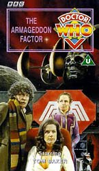
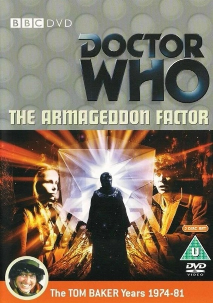
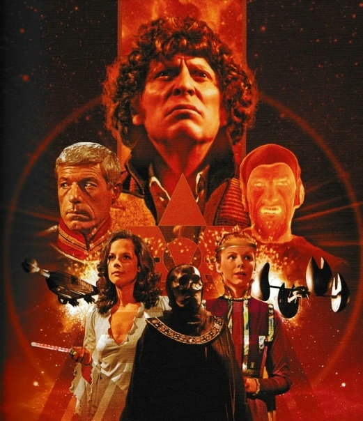

Эра Четвертого Доктора (16 сезон)
<<< НАЗАД ||| 6. Фактор Армагеддона ||| ДАЛЬШЕ >>>
Субтитры: Русские и Английские |  |
|---|---|
с фанатским обновлением визуальных эффектов (cunningmunki) Субтитры: Русские и Английские | |
The Armageddon Factor
Дата выхода: 20 января - 24 февраля 1979
Формат: 6 эпизодов по 25 мин.
 |  |
Финал арки Ключа Времени: последний фрагмент спрятан на Атриосе — планете, истощённой бесконечной войной с соседним миром Зеос. За затянувшимся конфликтом стоит Тень — слуга Чёрного Стража, и планы его куда масштабнее, чем просто военная победа. На помощь Доктору неожиданно приходит Дракс — давний однокурсник по Академии Повелителей Времени, ныне незадачливый механик на службе у врага. Шестиэпизодный финал сезона, где все нити сходятся, а цена собранного Ключа оказывается выше, чем предполагал Доктор. Единственная серия сезона с участием Чёрного Стража — заклятого врага, который вернётся ещё не раз.
 VHS - июнь 1995 |   DVD+Boxset - 24 сентября 2007 * Версия в нашей группе |
|---|



Трейлер: